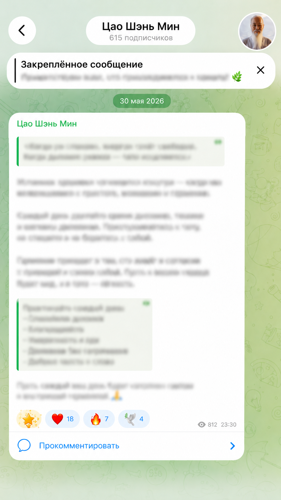

часть первая
КОД ДОЛГОЛЕТИЯ
ЦАО ШЭНЬ МИН
Код
Долголетия
и Свободы
от Болезней
Питание, сон, стресс и привычки простым языком
50+ лет опыта · @master_shenmin
Код Долголетия и Свободы от Болезней
30 глав о том, что забирает силу после 40: печень, сосуды, суставы, сон, сахар, память, энергия и ежедневный кодекс долголетия.
часть вторая
Почему тело сдаёт после 40
Колени, сердце, давление, сон, зрение, память и сахар: главы, после которых иначе смотришь на возраст и слабость.часть третья
Главный код долголетия
Точки тела, голодание, психосоматика и суточный порядок Шэнь Мина: финальная система, которую хочется открыть первой.Что внутри
30 глав о том, почему тело сдаёт после 40 — и какие ритуалы Шэнь Мин ставит в основу долголетия.
Секрет первых 20 минут
Утренний ритуал Шэнь Мина: горячая вода, стопы и настрой, с которого запускается весь день.
Главный фильтр молодости
Печень, живот, горечь, вздутие и «сырость»: место, где Шэнь Мин ищет корень тяжести.
Почему тело начинает скрипеть
Колени, спина, пятки и холод в суставах: глава для тех, кто уже боится лишнего движения.
Давление — это сигнал
Густая кровь, сосуды и сердце: почему Шэнь Мин считает, что тело предупреждает заранее.
Когда голова уже не ясная
Сон, память, зрение и шум в ушах: неприятные сигналы, которые нельзя просто списывать на возраст.
Неприятная правда внутри тела
Паразиты, слизь, лимфа, бронхи, почки и желчный пузырь — самые цепляющие главы книги.
Куда уходит сила после 40
Сахар, щитовидка, мужская энергия Ян и женский баланс Инь: то, о чём обычно вспоминают поздно.
Кодекс на каждый день
Что делать утром, днём и вечером: порядок, точки тела, питание и вечерний ритуал восстановления.
после книги
Книга даёт систему. Консультация и канал помогают внедрить её в жизнь
Если не хочется разбираться одному, выберите поддержку: личный разбор вашей ситуации или регулярные подсказки в закрытом канале.
консультация
Консультация с Шэнь Мином
Вес стоит, а вечером снова тянет на сладкое.
Сначала посмотрим сон, режим и ужин. Не будем ломать тело.
Я подскажу, с какого мягкого шага начать.
Разбор питания, режима, вечернего голода, сна, стресса и привычек. Шэнь Мин поможет понять, на что обратить внимание и с какого мягкого шага начать.
приватный Telegram
Закрытый канал

Регулярные советы про здоровье, питание, восстановление, профилактику и привычки.
выбирайте консультацию, если
- вес стоит, и непонятно, с чего начать;
- есть вечерний голод, срывы или хаос в режиме;
- хочется разобрать питание, сон, стресс и привычки;
- нужен конкретный первый шаг под вашу ситуацию.
выбирайте закрытый канал, если
- нужна регулярная поддержка после книги;
- хочется короткие советы без сложной терминологии;
- нужны чек-листы, напоминания и простые разборы;
- важно не потерять фокус через несколько дней.
частые вопросы
Частые вопросы
Сколько времени нужно, чтобы прочитать книгу?
Книга рассчитана на несколько спокойных вечеров. Её не нужно проходить за один раз: лучше читать по разделам и сразу отмечать, что применимо к вашему питанию, режиму, сну и привычкам.
Что будет в закрытом Telegram-канале?
Регулярные материалы про питание, восстановление, привычки, профилактику, вечерний голод, стресс и сигналы тела. Будут короткие советы, чек-листы, разборы частых ситуаций и простые действия на каждый день.
Что будет на консультации?
Вы описываете питание, режим, цель, привычки и то, что сейчас мешает. Шэнь Мин помогает разобрать ситуацию, подсказывает, на что обратить внимание, и с какого мягкого шага начать. Это не постановка диагноза и не назначение лечения.
В каком формате проходит консультация?
После оплаты вы получите инструкцию, куда написать. Дальше общение проходит в чате: вы отправляете вводные по своей ситуации, а в ответ получаете спокойный разбор и понятные рекомендации по привычкам, питанию и режиму.
Я из Казахстана, Узбекистана или Украины. Подойдёт?
Да, подойдёт. Книга, консультация и закрытый канал доступны онлайн. Главное, чтобы у вас был доступ к Telegram и возможность оплатить через подключённую платёжную страницу.
Как оплатить и получить доступ?
На сайте кнопки ведут на страницу оплаты. После оплаты книга открывается как цифровой продукт, а для консультации и закрытого канала вы получаете инструкцию по дальнейшим шагам.
Это медицинская консультация?
Нет. Материалы носят информационный характер и не заменяют очную консультацию врача. Мы не ставим диагнозы, не назначаем препараты и не отменяем лечение. При острых симптомах и хронических заболеваниях обратитесь к врачу.
Начните с книги или выберите поддержку
Книга подходит для самостоятельного старта. Консультация — если нужен разбор вашей ситуации. Закрытый канал — если нужна регулярная поддержка и напоминания.